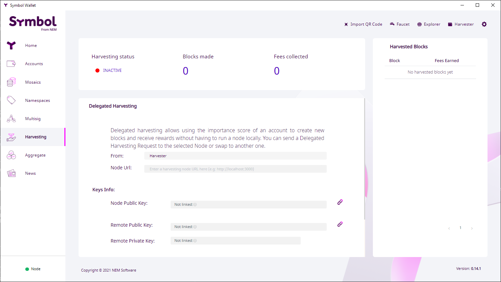
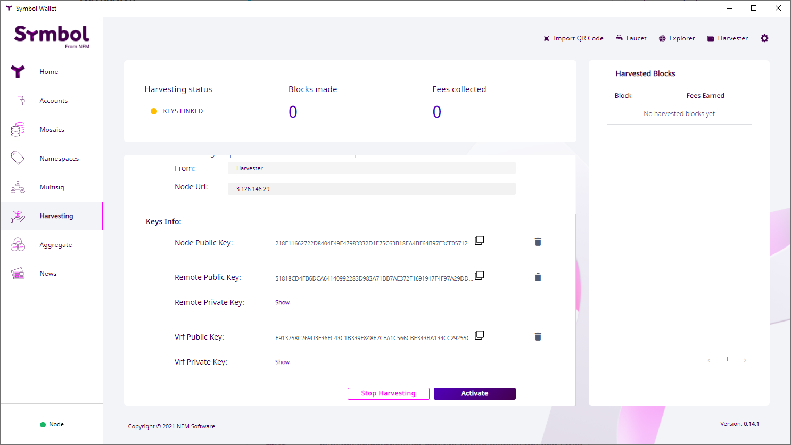

あなたのアカウントのインポータンスを安全にノードと共有して報酬を得ます。
デリゲートハーベスティング によって ノードを運用せず にアカウントで ブロック報酬を得る ことができます。同時にノードはアカウントの (おそらくはより高い) インポータンススコア の恩恵を受けることができます。
注釈
ノード所有者はノードの設定にアクセスできるため、 リモートハーベスティング を利用する方が便利です。
このガイドの手動バージョン が説明しているように、デリゲートハーベスティングを有効にするために必要なステップがいくつかあり、さまざまなアカウントといくつかのトランザクションを必要とします。したがって、このガイドに示されているように Symbol の デスクトップウォレット を使用する方が はるかに便利 です。
このプロセスでは 目的のノードを選択 して ハーベスティングリクエストを送信 するだけで済みます。
デスクトップウォレットでデリゲートハーベスティングを有効にするには、次のアイテムが必要です:
symbol.xym 以上と支払うトランザクション手数料が必要です。左側のメニューでハーベスティングオプションを選択します 。ハーベスティング画面が表示されます:
ハーベスティング状態 は 🔴 無効 を確認してください。
ノード URL ボックス をクリックして、現在ネットワークに接続されているノードのリストを表示します:

注釈
Peer と API の 両方 として機能するノードだけがリストに表示されますが、入力欄に 手動でURL を入れることで、Peer ノードからのハーベスティングをリクエストできます。この場合、ノードの トランスポート公開鍵 も提供する必要があります。
このキーはノード所有者が提供する必要があります 。 Symbol Bootstrap を使用してノードをインスタンス化した場合、このキーは addresses.yml ファイルにあります。
このようなノード URL です:
http://ngl-dual-101.testnet.symboldev.network:3000
リストからノードを選択し 「すべてのキーをリンク」 ボタンをクリックします ( 「キー情報」 セクションよりも下へスクロールする必要があるでしょう)
アグリゲートトランザクション への署名を求められます:

このアグリゲートトランザクションはハーベスティングに必要な 3 種類のキー をアカウントに登録します。
パスワードを入力して 「Confirm」 をクリックします。
デスクトップウォレットは トランザクションに署名 を行い ネットワークにアナウンス します。しばらく (30 秒以上かかることはありません) すると画面が更新されます。
ハーベスティングステータス が 🟡 キーリンク済み に変更され、各キーがフォームに表示されているでしょう。
あとは実際のリクエストである PersistentDelegationRequest トランザクション をノードへ送信することだけです。
「有効化」 ボタンをクリック
ノードに送信する永続的デリゲートメッセージを暗号化するには、パスワードが再度必要になります。

パスワードを入力して 「Confirm」 をクリックします。
永続的デリゲートリクエスト (特別なタイプの 転送 トランザクション) に署名してアナウンスするには、最後にもう一度パスワードが必要です。

パスワードを入力して 「確認」 をクリックする (もう一度)
承認メッセージを受信すると (30秒以上かかることはありません) ハーベスティングステータス は 🟡 有効化が進行中 に変わります。

この時点で、リクエストを受信して、アカウントをハーベスタとして追加するのはノード次第です。これが発生すると ハーベスティングステータス は 🟢 有効 に変わります。

デリゲートハーベスティングが有効になり、ノードの インポータンススコア に比例した割合で、手数料の徴収を開始します。 (注意事項について、以下の さいごに セクションを参照してください)
注釈
ノードを構成するのではなく PersistentDelegationRequest トランザクション を介して委任をリクエストする場合、ノードがデリゲートハーベスティングを有効にしているかどうかは、 ネットワークではなく ノードに依存しています。要求に応じるか、その状態について嘘をつき、誤解を招く ハーベスティングステータス インジケータを提供するかは、完全にノード次第です。
したがって、アカウントがハーベスターになったかどうかを知るための 信頼性のある 方法は、アカウントがハーベスト手数料を受け取り始めるのを待つ以外にはありません。
このプロセスの詳細については このガイドの手動版 を参照してください。
ハーベスティングステータス インジケータはアカウントのデリゲートハーベスティングの状態を確認するのに役立ちます。
| ステータス | 意味 |
|---|---|
| 🔴 無効 | キーがありません。ステップ 2 へ |
| 🟡 キーのリンク済み | キーは存在しますが、ハーベスティング委譲リクエストが送信されていません。ステップ 5 へ |
| 🟡 進行中 | ハーベスティングデリゲートリクエストは送信されましたが、ノードはまだそれを確認していません。数分かかる場合もあれば、決して起こらない場合もあります。この時点でできることは、別のノードを試す以外にありません。 |
| 🟢 有効 | ハーベスティングは有効です。あなたのアカウントのインポータンスに依存した、ハーベスト済みブロックとそれらの手数料を受け取り始めます。 |
importanceGrouping プロパティを参照してください。
{kind=link}
{kind=link}